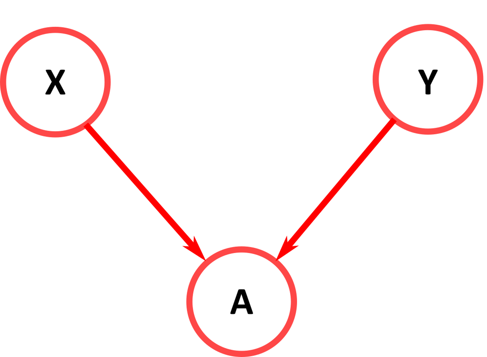

Introducción a Diagramas Causales
La escalera de la causalidad


Pearl, Judea. The Book of Why: The New Science of Cause and Effect (p. 28). Basic Books.
Diagrama Causal
Es un diagrama o grafo que describe una proposición causal para un conjunto de variables.
Las Herramientas matemáticas y estadísticas para operarlos han sido impulsadas por Judea Pearl y sus colegas desde los 1980.
Particularmente interesan los grafos acíclicos dirigidos, de ahí DAG .
Pearl, J. (1995). Causal Diagrams for Empirical Research. Biometrika , 82 (4), 669–688. https://doi.org/10.2307/2337329
Terminología básica de un DAG
- Nodo : una variable
- Arista : una relación causal, representada por una flecha
- Variable Explicativa : Es nuestro predictor causal de interés. Aquí es la representada por X . También se le llama variable independiente.
- Respuesta : En el DAG es la representada por Y . También se le llama variable dependiente.
- Ancestros : Nodos que están “aguas arriba” de una variable dada. En este DAG A y C son ancestros de X .
- Descendientes : Nodos que están “aguas abajo” de una variable en particular. En este DAG Y y B son descendientes de X .
B es una variable “mediadora” del efecto de A

Papel de las variables en un DAG
- Factor de Confusión : Es ancestro tanto de la explicativa X como de la respuesta Y . A lo es el DAG .
- Mediador : Es al mismo tiempo descendiente de la explicativa y ancestro de la respuesta. F lo es. Parte (o la totalidad) del efecto causal sobre la respuesta se transmite a través de él.
- Proxy de un Factor de Confusión : Es descendiente de un factor de confusión y ancestro de la explicativa o de la respuesta (pero no de ambas, pues entonces sería un factor de confusión). El efecto de confusión se transmite a través de esta variable. B es proxy.
- Competidor de la explicativa : Es un ancestro de la variable de respuesta Y, sin ser ni ancestro ni descendiente de la exposición X . G compite aquí.
- Instrumento : Un instrumento es un ancestro de la explicativa. No tiene ningún camino hacia la respuesta Y que no pase a través de la explicativa X (pues sería un factor de confusión). D es un instrumento.
- Colisionador : Un colisionador es un descendiente tanto de la exposición X como de la respuesta Y. E es un colisionador en el ejemplo DAG.
Cuándo esperar asociación

… a veces por pura buen fortuna
Sesgo sistemático: efecto de confusión
Hay sesgo sistemático si hay una asociación entre A e Y que no surge del efecto causal de A sobre Y. Cuando existe una asociación entre A e Y, incluso si A tiene un efecto causal cero sobre Y, se dice que hay sesgo bajo la condición nula.
Sesgo por Selección
En un DAG con nodos L, A e Y (en este orden de aparición)
Vevox
¿Qué significa que no haya un arco del nodo A al Y?
Ingresa a: vevox.app con el ID: 169-614-732
Si nuestro conocimiento en la materia es insuficiente para descartar la existencia de un efecto directo de la variable D sobre la E.
vevox
¿Deberíamos incluir un arco de D a E en el diagrama causal?
Ingresa a: vevox.app con el ID: 169-614-732
La inteligencia reduce el tiempo necesario de estudio para aprender. Al mismo tiempo, la inteligencia, junto con el tiempo de estudio explican la calificación en el examen. ¿Cuál es el DAG que describe esta proposición causal?
Ingresa a: vevox.app con el ID: 169-614-732
Reglas de independencia condicional
Un DAG también describe aspectos clave del “flujo de la asociación” a través de la estructura causal.
Cuando las variables están conectadas, correlacionan, lo que implica que la información puede fluir entre ellas en cualquier dirección.
Hay tres reglas fundamentales sobre como se puede dar esta interconexión, es decir de como se separan o conectan los nodos.
Regla 1 “variable intermedia”
Dos variables, X e Y, son condicionalmente independientes dado A , si sólo hay una ruta unidireccional entre X e Y , cuando A es una variable (podrían ser muchas) intercalada en el camino.

Regla 2 “causa común”
Si una variable A es una causa común de las variables X e Y , y solo hay una ruta entre X e Y , entonces X e Y son condicionalmente independientes cuando se consideran como condicionantes los datos de A .
Regla 3 “colisionador”
Si una variable A es el nodo de colisión entre dos variables X e Y , y solo hay un camino entre X e Y , entonces X e Y son incondicionalmente independientes pero dependen condicionalmente de A así como de cualquier descendiente de A .

Separación-direccional (d-separation)
El flujo de información en una ruta p queda bloqueado por un conjunto de nodos Z si y sólo si:
1 p contiene una cadena de nodos A → B → C o una horquilla A ← B → C , de tal manera que el nodo medio B proporciona datos como criterio condicional de observación. Es decir si la ruta es del tipo variable intermedia o causa común, el condicionarlas bloquea.
2 p contiene un colisionador A → B ← C tal que ni el nodo de colisión B , ni ninguno de sus descendientes, son criterio para condicionar las observaciones. Es decir condicionar sore un colisionador desbloquea .
Regla de la Puerta trasera
Podemos identificar el efecto causal de A e Y si tenemos datos suficientes como para bloquear todas las rutas de puerta trasera entre A e Y.
En este caso se trata de condicionar L.

¿Se puede medir el efecto, sin sesgos, de la aspirina?
Ingresa a: vevox.app con el ID: 169-614-732
Colisionadores
- McElreath nos ofrece esta proposición:
- Los estudios científicos más noticiables son los menos fiables. Cuanto más probable es que te mate, si es cierto, menos probable es que sea cierto. Cuanto más aburrido el tema, más rigurosos los resultados.
¿Cómo se produce esta correlación negativa?
Esta asociación NO CAUSAL se produce cuando los revisores se preocupan tanto por el interés “innovador” (pensando en su potencial noticioso), como por la fiabilidad.
Una fuerte selección induce una correlación negativa entre los criterios utilizados en la selección.
¿Por qué? Si la única forma de cruzar el umbral es obtener una puntuación alta, es más frecuente obtener una puntuación alta en un criterio que en ambos.
La paradoja de Simpson
Ejemplo con datos de COVID-19 sobre mortalidad por raza, tal y como se describe en el blog de Judea Pearl .
La paradoja: los blancos no hispanos tienen una mayor mortalidad si nos fijamos en los datos agregados. Pero: Desagregados por edad (relativo a la expectativa de vida, de ahí el arco B), los blancos tienen una mortalidad menor en todos los grupos de edad. El DAG correspondiente:

Como podemos ver en el gráfico, la edad es un factor de confusión para esta relación y, por tanto, mirar los datos observacionales Pr (Muerte|Raza) no dará la respuesta correcta. Una vez que observamos Pr (Muerte|Raza, Edad), el efecto de la variable Raza se invierte. La razón por la que puede ocurrir esto es poco intuitiva.
La paradoja de Berkson
- La paradoja de Berkson surge al condicionar un colisionador. Esto puede parecer paradójico pero usualmente es un artefacto del diseño del estudio, por ejemplo durante la selección de participantes.
- Supongamos investigas si existe alguna relación entre contraer COVID y padecer alguna otra enfermedad.
- Supongamos además que en la población general la COVID es independiente de otras enfermedades. Ahora bien, si basas tu estudio únicamente en pacientes hospitalizados, encontrarás que Pr(COVID|no Otras enfermedades) = ¡1!
- Obviamente hubo algún padecimiento para estar hospitalizados.
- Condicionar a la hospitalización hace que las dos variables resulten asociadas, cuando antes no lo eran.
- El condicionamiento sobre el colisionador ha desbloqueado la vía causal entre las dos variables.
Efecto problemático de un “colisionador”

¿cómo influye la edad sobre la felicidad?
Si disponemos de una amplia encuesta de personas felices, ¿cabría esperar alguna asociación entre la edad y la felicidad?
Estrellas de cine
- Supongamos que para convertirse en una estrella de cine de éxito hay que tener un talento especial o ser especialmente guapo, pero usualmente no ambos.
- Supongamos también razonablemente, que en el conjunto de la población no existe correlación entre talento y aspecto.
- Si condicionamos un estudio a analizar solamente estrellas de cine, muy probablemente creamos una confusa correlación negativa entre talento y aspecto.
Estrellas de la ciencia
Si condicionamos a estar en una institución de élite, crearemos una correlación negativa NO CAUSAL entre el talento y el trabajo duro.
La paradoja del bajo peso al nacer
Este es un ejemplo real que desconcertó a la comunidad médica durante muchos años.
Al estudiar el efecto del tabaco en la mortalidad infantil. Ya se sabía que fumar provocaba un mayor riesgo de bajo peso al nacer y que el bajo peso al nacer aumenta el riesgo de mortalidad infantil.
¿El tabaquismo tiene algún otro efecto sobre la mortalidad infantil?, aparte de causar bajo peso al nacer.
La intuición de los investigadores sugirió condicionar el peso al nacer y entonces observar el efecto del tabaquismo sobre la mortalidad: ¡se descubrió que fumar tenía un efecto protector!
La explicación es que ¡se trata de un sesgo del colisionador!
Hay varias causas de bajo peso al nacer. Fumar es una de ellas, pero hay otras.
Las otras causas de bajo peso al nacer tienen un mayor riesgo negativo sobre la mortalidad infantil, aparte de su efecto sobre el bajo peso al nacer.
Como reto, dibuja el DAG correspondiente y combina todos estos hechos para averiguar cómo el condicionamiento sobre el peso al nacer puede crear el hallazgo de que fumar tiene un falso efecto protector.